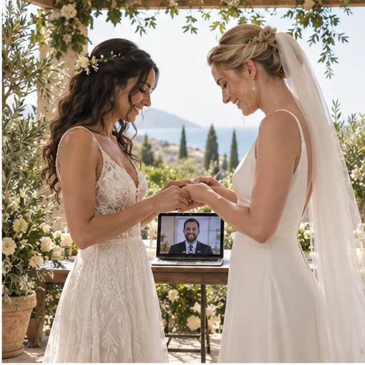

חתונה בבית: צ׳קליסט נעים לאירוע קטן

טקס בבית יכול להישאר פשוט ונעים, לפי הבית וההעדפות שלכם. המדריך מציע רעיונות לחלל ולנוחות, וצוות הליווי מטפל במסמכים, בתיאום ובחיבור לטקס. אין צורך בקישוטים או בהפקה מיוחדת.
מתחילים במפת הבית ובמספר האנשים
אם תרצו לארח בבית, חשבו על כניסה, מקום ישיבה ומעבר נוח לשירותים. אפשר לבחור אזור לטקס ופינה נוספת לשיחה או לכיבוד, אך אין צורך לשנות את הבית או להכין חלל מיוחד. התאימו את מספר המשתתפים למרחב שנוח לכם.
מזג האוויר ושעת היום עשויים להשפיע על נוחות המשתתפים. אם מתוכנן שימוש בחוץ, אפשר לחשוב על חלופה בתוך הבית. לאורחים עם מוגבלות בתנועה, כדאי להעביר מראש מידע שימושי על קומה, מעלית או חניה. אלה רעיונות לתכנון אישי לפי הבית והאורחים.
מסדרים פינות ותפקידים לפני שמקשטים
אם מתחשק לכם, מקום קטן לטבעות או לפריט משפחתי יכולים להוסיף משמעות. פרחים וקישוטים הם רעיונות להשראה בלבד; אפשר גם להשאיר את הבית כפי שהוא.
צוות הליווי מרכז את המסמכים, את פרטי המועד ואת הקישור, כדי שלא תצטרכו לנהל את התיאומים הבירוקרטיים בעצמכם. אם יש משימות ביתיות כמו מוזיקה, סידור כיסאות או השגחה על ילדים, חלקו אותן עם אנשים קרובים רק אם זה נוח להם.
בודקים צליל, תאורה ונוחות
אם חלק מהאורחים יצטרפו מרחוק, המדריך מציע לבדוק מראש את הקישור ואת איכות הקול. מצלמה בגובה העיניים ואור נעים הם רעיונות לבחירתכם; אפשר גם להסתפק בסידור הרגיל של הבית.
אם תהיה מוזיקה, בדקו שהיא אינה מכסה את הדיבור. אפשר למנות אדם קרוב שיעזור לאורחים מרחוק בשאלות חיבור, אם יש בכך צורך.
בונים סדר יום שמשאיר מקום לנשום
אם נוח לכם, סדר קצר של הגעה, טקס וברכה יכול לעזור לאורחים לדעת למה לצפות. צוות הליווי מרכז את מועד הטקס והקישור. כיבוד, צילום ועדכון שכנים הם לפי בחירתכם.
אין צורך ברשימת הכנות ארוכה. צוות הליווי מטפל במסמכים, בקישור ובתיאום עם עורך הטקס; אתם יכולים לבחור פריט אישי או רגע קטן שחשוב לכם, אם תרצו.